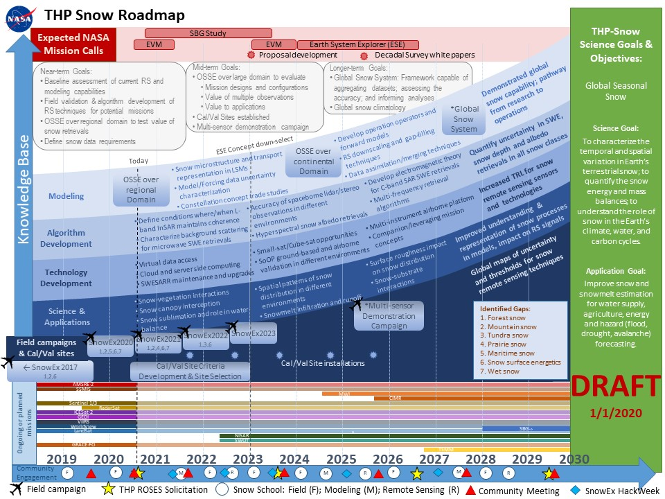
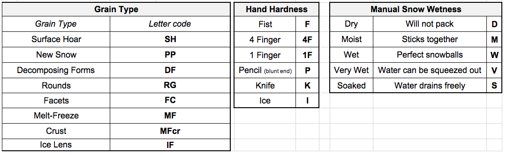
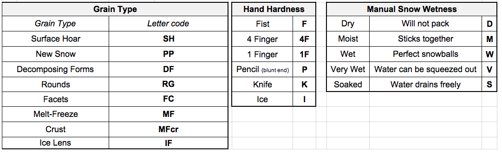

SnowEx Mission and Core Data Sets¶
by: Megan Mason (ATA Aerospace and Boise State), Carrie Vuyovich (NASA Goddard), HP Marshall (Boise State) mailto:meganmason491@boisestate.edu
(12 minutes)

Tutorial objectives:
Provide background for the NASA SnowEx Mission
Distinguish the different components of the core data
Describe the sampling design and naming convention
Provide examples to extract and prep data of interest using 1). NSIDC downloads and 2).snowexsql database
SnowEx Background¶
What is the Mission of SnowEx?¶
SnowEx is a multi-year program funded by the NASA Terrestrial Hydrology Program to address the most important gaps in snow remote sensing knowledge. It focuses on airborne campaigns and field work, and on comparing the various sensing technologies, from the mature to the more experimental, in globally-representative types of snow. The goal is to address the most important gaps in our snow remote sensing knowledge, and thus lay the groundwork for a future snow satellite mission.
Where has SnowEx been?¶
Campaign efforts are focused on various snow climates in the Western United States. SnowEx partnerships and expertise are spread across the US and international.

What are the core data sets and what makes them different from other data?¶
The core data sets are standardized manual ground observations collected by SnowEx participants. These observations provide a legacy data set for the purposes of calibration and validation efforts for the remote sensing instruments.

What is a snow pit? ⇨ ‘Layer data’ & ‘Site data’ in the snowexsql database¶
A snow pit is a vertical profile of snow from the snow surface to the ground.
This is where we collect a suite of ground observations that aid instrument and model development.
What are depth transects? or simply depths ⇨ ‘Point data’ in the snowexsql database¶
These are point meausurements that tell you how deep the snow is at georeferenced locations.
There are several instruments available to capture snow depth, some of which are an avalanche probe, MagnaProbe, or Mesa2.
What is an interval board? ⇨ data not processed yet for database¶
An interval board is a 2x2” board with a vertical pole attached at the center.
The board surface is our reference to track the amount of new snow that falls between field visits.
The board remains fixed for the season, and gets cleared each visit.
Table. Summary of Core Data Sets with DOI links for applicable data sets
| Core Data Sets | Parameters Available | Instruments | NSIDC DOI | |
|---|---|---|---|---|
| Snow Pits | Depth, Density, Temp., LWC, Stratigraphy, Grain Size, Wetness, Hand Hardness, Qualitative Environment, SWE |
Standard pit kit | SNEX17_SnowPits_GMIOP
SNEX20_SnowPits_GMIOP SNEX20_TS_SP (in prep.) SNEX21_TS_SP (future pub.) | |
| Depth Transects | Snow Depth - various sampling designs | MagnaProbe, Mesa2, Pit Ruler | SNEX17_SD
SNEX20_SD SNEX20_TS_SD (future pub.) SNEX21_TS_SD (future pub.) | |
| Interval Boards | New snow, SWE, density | Ruler and spring scale | SNEX20_TS_IB (future pub.)
SNEX21_TS_IB (future pub.) | |
 
